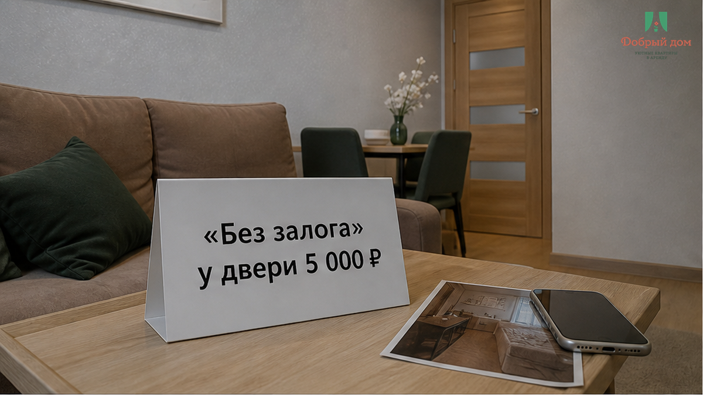
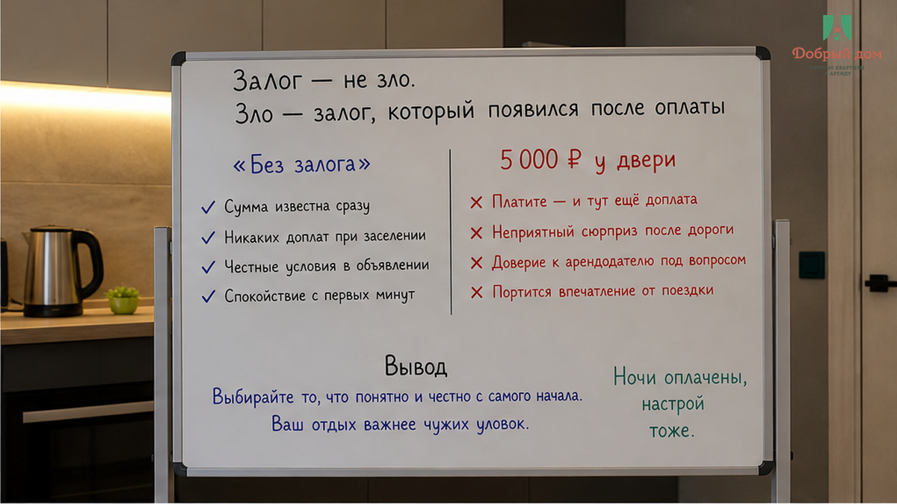
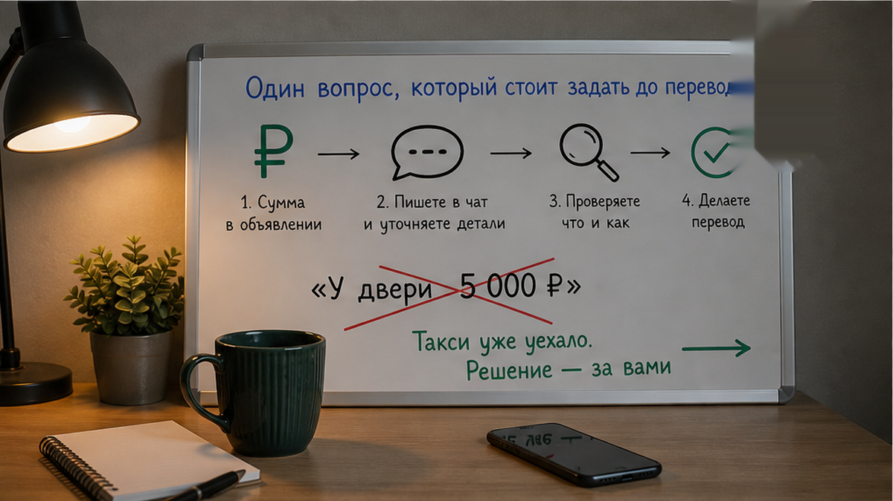
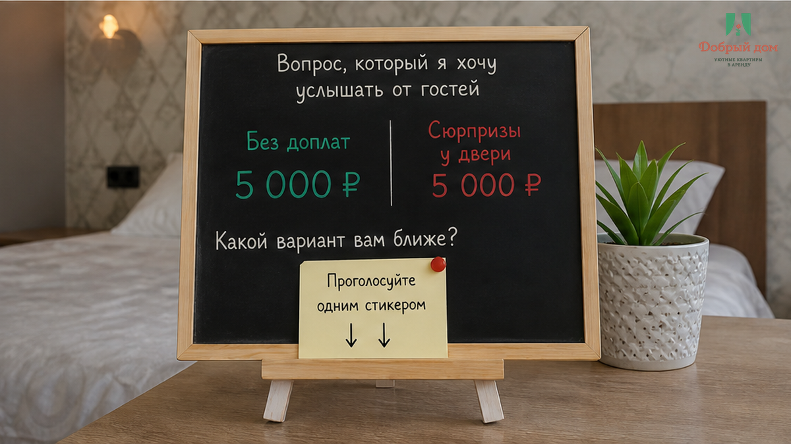
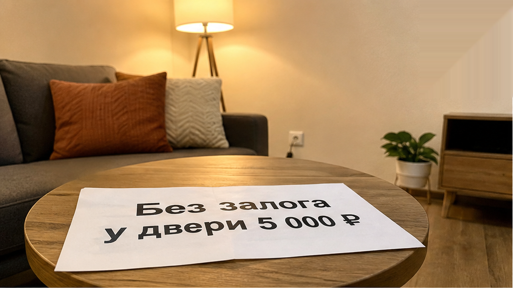
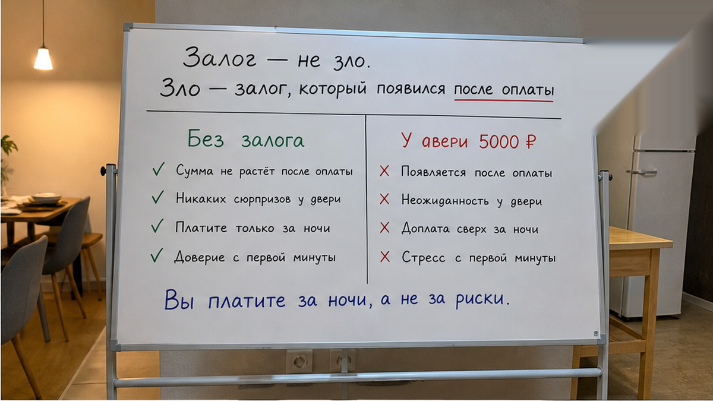
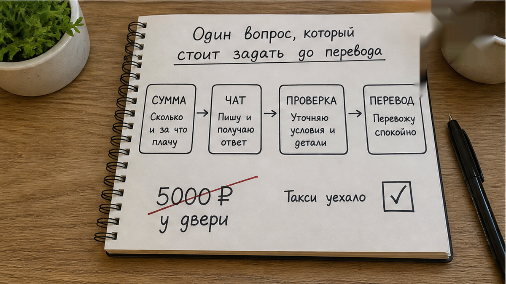
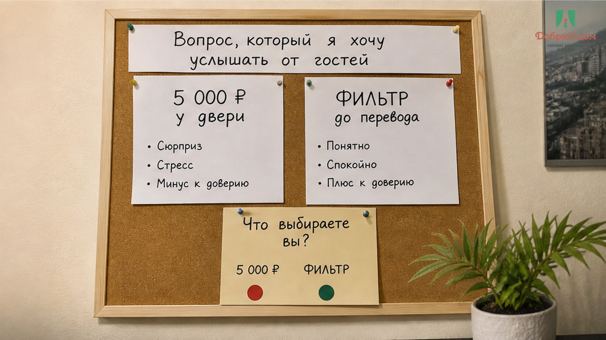

В карточке стояло: «без залога». Фильтр был выставлен именно на заселение без депозита, две ночи уже оплачены, а в переписке мы успели обсудить только время приезда и код от подъезда. Поэтому у двери человек с чемоданом услышал не подтверждение брони, а требование: «Переведите 5 000 ₽ залога, вернём после уборки». Так сумма появилась впервые — когда таксист уже уехал, а проживание на 2–3 ночи, примерно 6–9 тысяч рублей, списано с карты. Решать нужно за минуту: переводить незнакомому человеку или разворачиваться и писать в поддержку прямо из подъезда.
Сломалось здесь не то, что залог оказался равен нескольким тысячам. Сломалось обещание, на основании которого человек выбрал жильё и отсеял другие варианты. Он покупал не просто две ночи, а понятное условие — без депозита. А получил новую плату в тот момент, когда отказаться от сделки уже особенно трудно.
Я хост посуточной в Тюмени. Это «Добрый дом». Мы работаем в Telegram и MAX, и после таких историй гости спрашивают о залоге ещё до того, как называют даты.

Страховой депозит на посуточной аренде сам по себе нормален. Он нужен для защиты квартиры и отделён от цены проживания. Если гость заранее видит сумму, понимает порядок возврата и соглашается с этим до бронирования, в условии нет неожиданности. Обычно речь идёт о 2 000–5 000 ₽, и 5 000 ₽ могут быть обычной суммой — при одном важном условии: она должна быть известна до оплаты.
В части объявлений депозит указан прямо: сумма, момент возврата, иногда — после осмотра или уборки. Но примерно у трёх из пяти объектов эта строка есть, а у остальных её может не быть. Гость читает отсутствие условия как «залога нет». Хост иногда считает иначе: «Я не написал, но попрошу на месте». Для человека с чемоданом разница между этими двумя трактовками превращается в пять тысяч рублей и неприятный выбор у двери.
Поэтому сама цифра не является главным риском. Риск начинается там, где цифра впервые звучит после выбора жилья по фильтру «без залога». Даже если хост действительно собирается вернуть деньги, у гостя уже нет прозрачного правила: кому переводить, где зафиксирована сумма и когда именно она вернётся.

Спросите прямо: где в карточке и в чате указаны сумма залога и дата его возврата? Если этого блока нет ни там, ни там, вы едете без защиты от разговора на пороге. Можно написать: «Подтвердите, пожалуйста, что залога нет», либо: «Укажите сумму залога и срок возврата». Ответ в чате лучше обещания по телефону. Молчание или фраза «на месте разберёмся» тоже многое объясняют.
Деньги лучше не отправлять раньше, чем сверены все условия. Мы уже разбирали случай, когда после предоплаты в чате наступила тишина: после перевода переговорная позиция гостя резко слабеет. При бесконтактном заселении порядок тот же — сначала вы открываете квартиру и сверяете её с описанием, а уже потом решаете вопрос с депозитом. Пошагово это показано в материале о бесконтактном заселении посуточно в Тюмени.
Важно не смешивать разные ситуации. Здесь депозит появляется внезапно, уже при заселении. Это не спор о том, вернут ли заранее согласованный залог на выезде. И не случай, когда у двери требуют доплату за третьего гостя, хотя оплачено проживание за двоих. Но механизм у всех историй похожий: условие меняется тогда, когда отказаться от него дороже всего.

5 000 ₽ — для вас нормальная сумма, если она была видна в карточке до брони, или это красная линия в любом случае, если вы выбрали жильё по фильтру «без залога»? Напишите в Telegram или MAX. Там я отвечаю лично: мне важно понимать, где для гостя заканчиваются обычные правила и начинается давление у двери.

Сначала зафиксируйте то, что было обещано до бронирования: сохраните карточку со строкой «без залога», условия заказа и полную переписку. Полезен и скриншот выставленного фильтра. Если вы всё-таки вошли в квартиру, снимите её состояние и подъезд в день заезда, до перевода денег. Это не бюрократия ради бюрократии, а способ заменить спор «мне сказали» на понятные доказательства.
Если фактические условия не совпали с карточкой, обращайтесь в поддержку в день заселения. Поддержка может связаться с хостом и зафиксировать расхождение по своим правилам, но автоматического возврата денег только из-за жалобы не обещает. Поэтому лучше не ждать суток и не откладывать вопрос до выезда.
И всё же требование депозита не становится неправильным только потому, что гостю оно неприятно. Проблема в другом: человек должен узнать о нём до оплаты, а не в момент, когда стоит с чемоданом перед закрытой дверью.

Нет. Так не заселяем. У нас до брони в чате закрываются все условия: стоимость, порядок оплаты, сумма залога или его отсутствие и срок возврата. Если я вспоминаю у двери о пяти тысячах, которых не было в переписке, это моя недоработка, а не гостевая проблема. Условие, придуманное на пороге, не становится честным только потому, что его произнесли уверенным голосом.


Сначала проверка. Потом перевод. Сначала вы видите сумму и срок возврата, получаете подтверждение в чате и сохраняете карточку. Потом открываете квартиру и принимаете решение. Залог полезен, когда правила известны до поездки. Когда их протягивают вместе с ключом, это уже не прозрачное условие, а давление на человека, которому сложнее всего отказаться.
Если хотите заселение без новых сумм у порога, напишите нам в Telegram или MAX, забронируйте жильё на странице бронирования, посмотрите варианты на сайте «Доброго дома», позвоните по +7 (993) 574-83-22 или напишите менеджеру. Условия отправим текстом до брони.